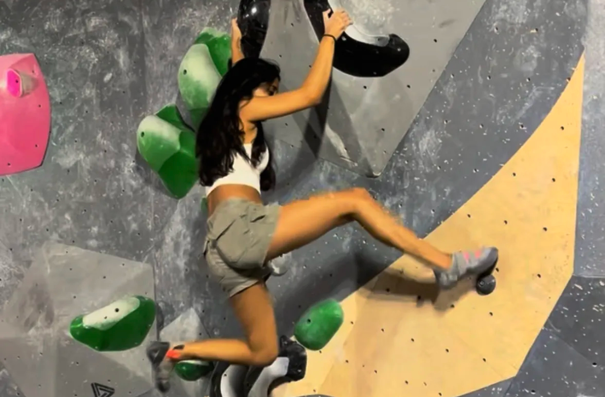

Hey! I'm Niva, and this is Fall Risk, my personal climbing blog. I started climbing on a whim at a YMCA in Florida back in 2016, and somewhere between my first top-rope session and my hundredth fall off a V4, I got completely hooked. This site is where I document my climbing journey — the sends, the splats, the gear I love (and the gear I regret buying), and the places I've climbed along the way. Whether you're a fellow climber or just curious about why people willingly grab tiny plastic holds until their fingers give out, I hope you find something here that resonates. Welcome aboard, and don't forget to chalk up.

Climbing Map
I've been to a lot of climbing gyms around New Jersey (and a few outdoor spots too). On the map page you can explore all the places I've climbed at, filtered by type — indoor bouldering, top rope, outdoor spots. If you're looking for somewhere new to climb, start here.

Reviews
From my first pair of beginner shoes to the La Sportiva Solution Comps that gave me blisters for weeks — I review the gear and climbs that have shaped my experience. No fluff, just what I actually think after putting it all to the test on the wall.

Image Gallery
I used to think taking pictures while climbing was a waste of time — turns out, it's one of the best ways to improve and remember the moments that matter, as well as teach others in similar positions. Check out photos of the phases of a climb, different types of holds, and the gear that keeps me on the wall.